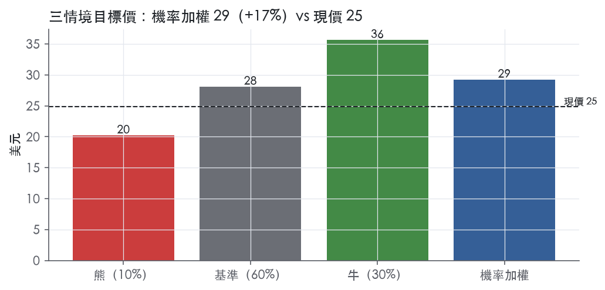
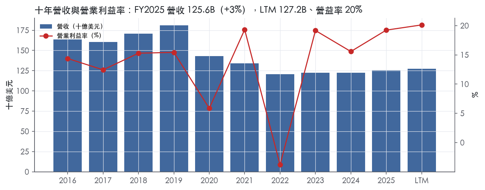
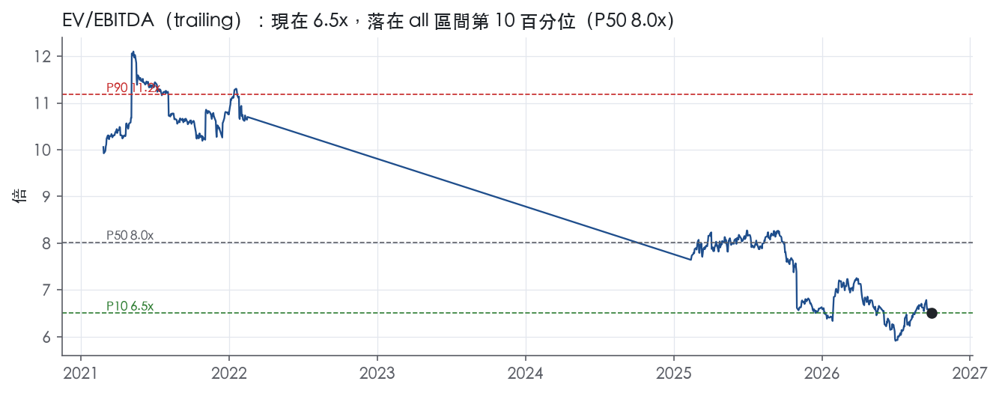
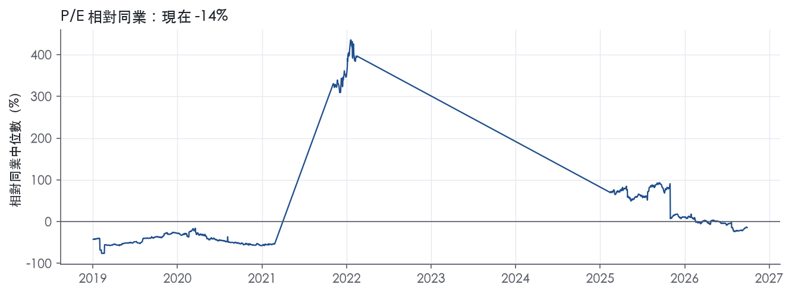
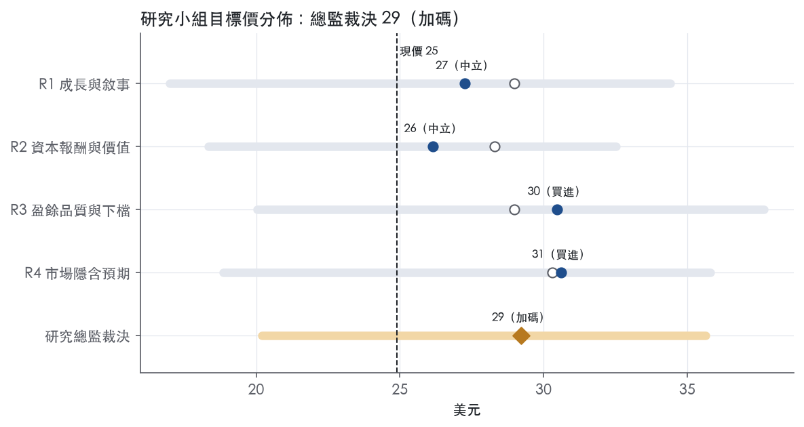
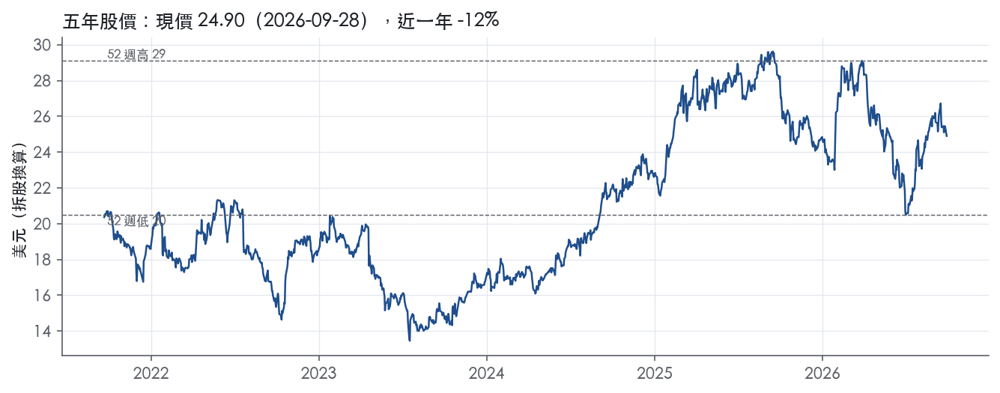

評等總表 › 通訊服務 › T
倍數持平靠現金回報，溫和看多｜評等 加碼｜目標價 29
| 報告日 | 評等 | 目標價 | 當時股價 | 超額報酬 |
|---|---|---|---|---|
| 2026-09-28 | 加碼 | 29.21 | 24.90 | +11.6% |
| 評等 | 加碼 |
| 12 個月目標價 | 29 美元 |
| 現價 | 24.90 美元（2026-09-28） |
| 預期報酬 | 股價 +17.3%＋股息 4.5%＝總報酬 +21.8%；同業籃門檻 10.2%，超額 +11.6% |
| 估值方法 | EV/EBITDA 6.3x，套在第 5–8 季的EBITDA（也就是一年後的未來四季） |
| 三情境 | 熊 20／基準 28／牛 36 |
| 研究流程 | 四位研究員兩輪辯論＋研究總監裁決 |
| 資料來源 | SEC EDGAR XBRL、Tiingo、FRED（全免費） |
倍數持平靠現金回報，溫和看多（研究總監裁決，四位研究員兩輪辯論後）
評等 加碼｜12 個月目標價 29 美元（總監三情境機率加權 30 與研究員中位數 29 各半）｜現價 24.90（2026-09-28）
預期報酬：股價 +17.3%＋股息 4.5%＝總報酬 +21.8%。同業籃門檻 10.2%，超額 +11.6%。
估值方法：EV/EBITDA 6.3x，套在第 5–8 季的EBITDA（也就是一年後的未來四季）。三情境：熊 20（10%）／基準 28（60%）／牛 36（30%）。
什麼會讓研究總監改變看法：EchoStar 交割時市值縮水接近對價（市場不給成本價）或 FY2027Q1 合併營收年增跌破 2.0%，我改採 R2 的倍數與營收路徑轉中性；2027-01 指引重申且交割後槓桿 ≤3.0x，市場前瞻倍數站上 6.5x，則我在倍數上錯向，改採 R3、R4。
| 過去四季（實際，FY2026Q2） | 未來四季 | 第 5–8 季 | 第 9–12 季 | |
|---|---|---|---|---|
| 營收（B） | 127.2B | 130.4B | 133.4B | 136.9B |
| 營收成長 | 2.6% | 2.5% | 2.3% | 2.6% |
| 營業利益率 | 20.1% | 21.0% | 21.5% | 22.0% |
| EPS（美元） | 3.02 | 2.37 | 2.61 | 2.87 |
| EPS 成長 | 70.8% | -21.6% | 10.1% | 10.3% |
| 每股股息（美元） | 1.11 | 1.11 | 1.11 | 1.11 |
| P/E（現價） | 8.3x | 10.5x | 9.6x | 8.7x |
| 股息殖利率（現價） | 4.5% | 4.5% | 4.5% | 4.5% |
過去四季為申報數字；預測為研究總監的假設、程式計算。倍數與殖利率都用現價計算，用來看現價對應各期獲利的高低。
| 情境 | 機率（歷史） | 故事 | 未來四季營收成長 | 第 5–8 季營益率 | 倍數 | 目標價 | 股價漲跌 |
|---|---|---|---|---|---|---|---|
| 熊 | 10%（11%） | Legacy 崩解快於 AC 補位、EchoStar 交割後槓桿破 3x、回購縮手（風險表第 1、2、4 條） | 1.0% | 19.0% | 6.0x | 20 | -18.9% |
| 基準 | 60%（58%） | 指引兌現、倍數不動，報酬來自 EBITDA 成長、回購與 4.5% 股息 | 2.5% | 21.5% | 6.3x | 28 | 12.8% |
| 牛 | 30%（31%） | 2028 年 EBITDA 5%+ 指引完全兌現、2027-01 重申 FCF 19B+，倍數回前瞻帶 P50 | 2.5% | 21.8% | 7.2x | 36 | 43.1% |
目標價由程式依研究總監的驅動與倍數計算；機率由研究總監給定。括號內是歷史頻率：把這檔股票過去十年 12 個月報酬的波動形狀，置中在基準情境，結果落在各情境附近的比例。

四位研究員用不同方法各自估值，回應研究總監的質疑後交出第二輪，最後由總監逐點裁決。各研究員的主張見第七章，裁決理由見第八章，完整論證見《研究底稿》。
| 立場（一輪→二輪） | 加權目標價（一輪→二輪） | 評等（一輪→二輪） | 第二輪倍數 | 熊～牛目標價 | |
|---|---|---|---|---|---|
| R1 成長與敘事 | 看多→看多 | 29→27 | 加碼→中立 | 6.5x | 17～34 |
| R2 資本報酬與價值 | 看多→中性 | 28→26 | 加碼→中立 | 6.3x | 18～33 |
| R3 盈餘品質與下檔 | 中性→看多 | 29→30 | 加碼→買進 | 6.5x | 20～38 |
| R4 市場隱含預期 | 看多→看多 | 30→31 | 買進→買進 | 6.5x | 19～36 |
| 研究總監裁決 | 看多 | 29 | 加碼 | 6.3x | 20～36 |
目標價由程式依各自的驅動與倍數計算；評等＝機率加權總報酬 − 同業籃門檻。
AT&T 是一家 1983 年於德拉瓦州註冊的控股公司，主要在美國提供無線與固網電信、寬頻服務，並透過墨西哥子公司提供無線服務¹。公司前身為 SBC Communications，2005 年併入 AT&T Corp. 後更名，歷經 BellSouth（取得 AT&T Mobility 100% 股權）、DIRECTV（2025 年 7 月已出售剩餘股權予 TPG）等一系列併購與資產處分，目前是一家以「連結」為核心、靠規模與網路資產取勝的公用事業型電信商。截至 2026-09-28，市值 172.96B，企業價值 299.34B，LTM 營收 127.24B，規模在美國電信業居前列。
公司在 FY2025 財報揭露的分部架構為 Communications（占 2025 年分部營收約 97%）與 Latin America（約 3%，且貢獻不到分部營業利益的 1%）¹。Communications 之下再分 Mobility（全美無線服務與設備，120 百萬用戶，含 91 百萬後付費、18 百萬預付費、11 百萬轉售）、Business Wireline（企業乙太網路光纖、固定無線、IP 語音及管理服務）、Consumer Wireline（光纖寬頻、AIA 固定無線接入、傳統語音）¹。以服務類別看 2025 年營收結構：無線服務 54%、光纖與進階連結服務 13%、傳統過渡性服務 8%、設備銷售 18%¹；傳統語音與資料業務逐年萎縮，光纖與進階連結占比則逐年上升（2023 年 11%→2024 年 12%→2025 年 13%）¹。值得注意的是，自 2026 年第一季財報起，公司已將分部改組為「Advanced Connectivity」與「Legacy」兩大類，取代原本 Mobility／Business Wireline／Consumer Wireline 的切法，以反映聚合無線與固網的策略²；10-K 尚未更新此新架構下各業務的規模占比，屬 10-K 未揭露範圍。
公司無單一客戶占合併營收 10% 以上，客戶集中度風險低¹。地理上以美國為主體，墨西哥透過 Unefon 與 AT&T 品牌提供服務，2025 年底約 24.7 百萬用戶，以 América Móvil 為主要競爭對手¹。零售通路涵蓋自有門市、代理商與第三方零售通路，以及線上通路，並提供分期付款購機與攜機方案¹。寬頻方面 2025 年底光纖用戶 10.4 百萬（全年淨增 1.1 百萬）、AIA 固定無線接入用戶 1.5 百萬（淨增 875,000），合計寬頻連接數達 16.0 百萬，較上年 15.3 百萬成長¹；同時公司仍在加速淘汰銅纜，2025 年底交換式接取線僅剩 2.1 百萬條（上年 2.7 百萬）¹。
過去四季營收持續正成長、獲利結構隨光纖與行動業務擴張改善。FY2025Q3 營收 30.71B、年增 1.6%，營益率 19.9%，EBITDA 11.44B，淨利因一次性稅務或處分利益跳升至 9.31B、EPS 1.29。FY2025Q4 營收 33.47B、年增 3.6%，但營益率回落至 17.3%，EBITDA 10.92B，淨利 3.79B、EPS 0.53。FY2026Q1（2026-02-02 完成收購 Lumen 大眾市場光纖業務後首季）營收 31.5 billion，較去年同期成長 2.9%²，經調整 EPS 0.57 對比去年同期 0.51²，自由現金流 2.5 billion，較去年同期 3.1 billion下滑，反映光纖布建資本支出加速²。FY2026Q2 營收 31.6 billion，年增 2.3%³，Advanced Connectivity 服務營收 23.5 billion、年增 5.1%，該分部營業利益年增 20.3%、EBITDA 年增 8.0%³，調整後 EBITDA 12.3 billion、年增 5.2%³，公司並將 2026 年股票回購步調加快至約 100 億美元³。公司在 2026Q2 法說重申 2026 全年及 2026-2028 多年期財測：服務營收低個位數成長、Advanced Connectivity 服務營收 2026 年成長 5%以上、調整後 EBITDA 成長 3%至 4%、調整後 EPS 2.25 至 2.35 美元、資本投入 230 億至 240 億美元區間、自由現金流 2026 年 180 億美元以上³。
公司將 5G 與光纖列為核心成長引擎，強調「fiber underpins the connectivity we deliver, both wired and wireless」，並認為固網與行動的融合策略（convergence）將帶來差異化與額外成長機會¹。2026 年的重點包括加速有機光纖擴張與透過收購 Lumen 大眾市場光纖業務擴大覆蓋、部署低中頻段頻譜以強化速度與容量（含向 EchoStar 收購頻譜的待完成交易），並持續淘汰高成本銅纜以降低結構性成本¹。CEO John Stankey 在 2026Q2 法說中表示：「We are accelerating the pace of our planned share repurchases this year to approximately $10 billion, reflecting our confidence in our market position. With an industry-leading position in fiber... we believe our network performance and operating scale can't be matched.」³。公司目標 2026 年底光纖覆蓋超過 4,000 萬個地點、2030 年底超過 6,000 萬個地點³，並規劃 2026-2028 年間透過股利加回購向股東返還 450 億美元以上，同時期望淨負債／調整後 EBITDA 倍數在 EchoStar 交易完成後約三年內回到 2.5x 區間目標³。整體看，AT&T 的敘事是典型的「投資光纖與頻譜換取聚合客戶與長期自由現金流成長」，Legacy 業務加速萎縮換取結構性成本下降是這個故事能否兌現的關鍵。以 trailing 倍數看，目前 P/E 8.3x、EV/EBITDA 6.5x 明顯低於公司 2016 年上市以來全期中位數（11.6x／8.0x），顯示市場對其高資本支出、高槓桿轉型路徑仍保持謹慎。若 Advanced Connectivity 的雙位數 EBITDA 成長能持續抵銷 Legacy 業務加速下滑的拖累，目前的估值折價存在修復空間，但需持續觀察 EchoStar 交易與去槓桿進度是否如期落地。

AT&T 評為無護城河，趨勢穩定。 美國無線市場由三家全國性業者瓜分，產業結構確實有效率規模的屏障，但這個屏障沒有換成超額報酬。 過去 9 個有資料的年度，ROIC 沒有一年高於資本成本代理值 10.2%。 我們沒有把握 AT&T 在未來 5 年讓 ROIC 持續高於資本成本，所以依評級標準只能給「無」。 趨勢評為穩定而非變寬：FY2025 的 ROIC 8.7% 是十年最高，但與資本成本仍有落差，而且只有一年的數據，還不足以認定結構已經改變。
AT&T 的優勢集中在效率規模與授權，轉換成本和成本優勢只有弱證據，網路效應則沒有證據，不列入。
看不到，數字與「有護城河」的主張正面衝突，這是評級定為「無」的主因。
ROIC 長期低於資本成本。
營益率不穩。
唯一穩定的是現金流。
近期改善是真的，但幅度不夠。
最大的侵蝕力量是同質化競爭和永續的資本支出，兩者都會壓住 ROIC 的上限。
目標倍數相對同業應折價，不應給任何溢價。 理由是 ROIC 九年都沒有越過資本成本，估值只能按「會產生穩定現金但不創造超額報酬」的公用事業型資產處理，終值階段應假設報酬率收斂到資本成本。 目前 P/E 8.3x 低於全期中位數 11.6x（band.pe.全期.P50），這個落差不構成倍數回升的理由；要等 ROIC 連續兩年以上站上資本成本，才值得重新檢討是否調升到與同業持平。
| 指標 | 最新 | 十年平均 | 標準差 | 最低 | 最高 |
|---|---|---|---|---|---|
| ROIC | 8.7% | 5.6% | 3.0% | -1.6% | 8.7% |
| 營業利益率 | 19.2% | 13.3% | 6.8% | -3.8% | 19.3% |
| FCF 利潤率 | 15.5% | 15.1% | 3.1% | 10.3% | 19.9% |
| ROE | 17.9% | 9.3% | 8.4% | -5.9% | 22.1% |
程式計算。資本成本代理值（10 年債＋5%）：10.2%；ROIC 平均減資本成本：-4.6%；ROIC 有資料的 9 年中，高於資本成本 0 年。
LTM營業現金流／淨利1.85x，近三年平均2.68x，均為綠燈，盈餘有現金支撐。FCF／淨利LTM為0.82x，近三年1.33x，燈號黃，主因資本支出上升（FY2025資本支出/營收16.6%）壓縮自由現金流轉換率。應計比率LTM為-4.3%、近三年-5.8%，遠優於5.0%紅線，代表盈餘不是靠應計項目堆出來的。營運資金面也乾淨：FY2025應收帳款成長減營收成長為-11.0pp、存貨成長減營收成長+3.9pp，均在綠燈區間。10-K亦揭露公司透過應收帳款出售及供應商延遲付款方案（direct supplier financing）改善現金，2025年淨影響為改善營運現金流443⁴，這屬於溫和的現金管理操作而非盈餘灌水，但已計入CFO數字裡，值得留意其對CFO/淨利比率有正向貢獻。
FY2025 GAAP淨利大幅跳升主要來自業外項目：出售DIRECTV股權認列約5,600利得計入「其他收入（費用）—淨額」⁴，加上DIRECTV處分前收到超過帳面價值的現金分配也墊高權益法收益⁴；同時2025有效稅率降至13.4%，主因DIRECTV免稅利得及2024商譽減損不可扣抵的比較基期效果⁴。FY2024的低基期則是因為Business Wireline報導單位認列4,422商譽減損及Open RAN網路現代化相關重組終止費⁴。這些都是真實但非常態的項目，我判斷DIRECTV處分利得與商譽減損都不該計入常態盈餘估值基礎。近期季度新聞稿的調整項則偏經常性：FY2026Q2 GAAP稀釋EPS 0.66，調整後EPS 0.65（差異-0.01主要是稅務利益幾乎全被資產棄置費用及交易/法律等項目抵銷）³；FY2026Q2調整後EBITDA 12.3B對比GAAP營益7.0B、調整後營益7.5B³，差距主要是資產棄置與重組類費用，這類費用在電信業網路轉型期屬於半經常性，我認為不宜完全加回。SBC占營收僅0.4%（十年平均同為0.4%，綠燈），非稀釋來源的主要噪音。
淨負債126.38B、EV/EBITDA 6.5x，槓桿計分卡淨負債/EBITDA LTM 2.75x為黃燈，接近3.00x紅線且近三年平均2.93x同樣偏高。利息保障倍數LTM 3.56x、近三年3.29x，均低於8.00x綠燈門檻，接近3.00x紅線邊緣，屬黃燈。公司2025年新增14,027長期債務發行、僅償還5,528，年末總債務136,100較2024年123,532成長⁴，且已宣布EchoStar頻譜收購約23,000及Lumen光纖資產收購5,750兩筆大型現金支出⁴，管理層明確表示淨負債/調整後EBITDA要在EchoStar交易完成後約三年內才回到2.5x目標區間³，代表短期槓桿會先惡化。資本配置上（股利＋回購）／淨利LTM 74.3%、近三年64.2%，均為綠燈但已偏高，且公司加速2026年股票回購至約100億³，同時維持每股1.11股利不變⁴，稀釋股數年變動-1.2%顯示回購確實在淨減少股數，是真實的股東回饋而非僅為抵銷SBC稀釋。
程式標出五個淨利率年度跳動紅旗，我逐條檢視原因，判斷均為「可解釋、非盈餘品質問題」：
以上五個紅旗性質相近：AT&T近十年經歷多次重大資產處置（WarnerMedia、DIRECTV）與商譽減損，淨利率年度間跳動主要由業外/一次性項目驅動，10-K MD&A對FY2025與FY2024的跳動已有明確文字說明（DIRECTV利得、商譽減損）⁴，我判斷這組紅旗屬「一次性項目造成的假警報」，不代表經常性盈餘品質惡化。真正該留意的是計分卡兩個黃燈：淨負債/EBITDA與利息保障倍數，兩者互為表裡，反映AT&T資本結構仍偏重、且即將因EchoStar與Lumen收購進一步加槓桿⁴³，這是真實、非一次性的風險，不是假警報。
估值應以調整後EPS與調整後EBITDA為基礎（FY2026Q2調整後EPS 0.65、調整後EBITDA 12.3B），因GAAP淨利被DIRECTV處分利得等非經常性業外項目扭曲，直接用GAAP P/E 8.3x會低估真實獲利品質的穩定度但也可能因一次性利得而錯誤壓低倍數基礎。現金轉換與應計比率乾淨，不需要對經常性盈餘本身打折，但黃燈的槓桿（2.75x）與利息保障（3.56x）加上即將到來的EchoStar／Lumen大型收購支出，應該在EV/EBITDA倍數上給予保守處理，不宜用歷史中位數（10y P50 8.0x）上緣估值，直到淨負債/EBITDA確認回落至管理層目標的2.5x區間³。
| 項目 | LTM | 近三年 | 十年 | 燈號 | 規則 |
|---|---|---|---|---|---|
| 營業現金流／淨利 | 1.85x | 2.68x | 0.76x | 綠 | ≥1.00x 綠、<0.80x 紅 |
| 自由現金流／淨利 | 0.82x | 1.33x | 0.31x | 黃 | ≥0.90x 綠、<0.60x 紅 |
| 應計比率（(淨利−CFO)／平均總資產） | -4.3% | -5.8% | -5.9% | 綠 | ≤0.0% 綠、>5.0% 紅 |
| SBC／營收 | — | 0.4% | 0.4% | 綠 | ≤3.0% 綠、>8.0% 紅 |
| 淨負債／EBITDA | 2.75x | 2.93x | 3.81x | 黃 | ≤1.50x 綠、>3.00x 紅 |
| 利息保障倍數（營業利益／利息） | 3.56x | 3.29x | 2.86x | 黃 | ≥8.00x 綠、<3.00x 紅 |
| 稀釋股數年變動 | -1.2% | -1.8% | 1.7% | 綠 | ≤0.0% 綠、>3.0% 紅 |
| （股利＋回購）／淨利 | 74.3% | 64.2% | 8.1% | 綠 | ≥50.0% 綠、<0.0% 紅 |
| 應收帳款成長 − 營收成長（FY2025） | -11.0pp | — | — | 綠 | ≤5pp 綠、>15pp 紅 |
| 存貨成長 − 營收成長（FY2025） | +3.9pp | — | — | 綠 | ≤5pp 綠、>15pp 紅 |
程式計算；燈號以 LTM（無則近三年平均）判定。
| 風險 | 觸發指標（看什麼數字、在哪裡看） | 對 EPS 的影響方向與粗略幅度 | 未來 12 個月發生機率（高／中／低） | 出處 |
|---|---|---|---|---|
| Legacy 服務營收衰退快於 Advanced Connectivity 成長抵銷 | 每季財報揭露的 Legacy／Advanced Connectivity 分部營收年增率；公司指引 Legacy 2026 年衰退 20%+，2027 年後 EBITDA 轉負 | 負向、中：公司自訂調整後 EPS 2026 年目標區間 2.25–2.35，若 Legacy 惡化速度超預期，EPS 下修風險大於上修 | 中 | 8-K 財報新聞稿（2026-07-22） |
| 淨負債／調整後 EBITDA 槓桿去化不如預期，推遲到 EchoStar 交易完成後仍需約三年才回 2.5x | 每季財報淨負債（現況 126.38B）與調整後 EBITDA 比值；EchoStar 交易完成日與後續三年進度 | 負向、中：利息費用上升侵蝕淨利，且限制回購空間 | 中 | ³、 |
| 資本支出／5G 與光纖布建成本超支或延遲，無法如期達成 2026 年底 4,000 萬、2030 年底 6,000 萬光纖覆蓋點目標 | 每季資本投入（capital investment*）是否落在 230–240 億美元區間；每季新增光纖覆蓋地點數是否達標 | 負向、中：資本支出超支直接壓縮自由現金流（2026 指引 180 億美元以上），FCF 若不達標將牽動股利與回購能力 | 中 | 8-K 財報新聞稿（2026-07-22） |
| 競爭與定價壓力（尤其固網轉光纖地區的有線業者競爭）侵蝕用戶淨增與 ARPU | 每季 postpaid phone churn（本季 0.86%）、fiber/fixed wireless 淨增戶數年增率是否放緩 | 負向、中：churn 上升或淨增放緩會直接壓低 Advanced Connectivity 服務營收成長率，公司自訂目標為年增 5%+ | 中 | 8-K 財報新聞稿（2026-07-22） |
| 網路安全事件（含供應商／代管系統）造成客戶資料外洩或營運中斷 | 是否有新的 Item 1.05 Form 8-K 揭露；公司已於 2024 年 7 月揭露過一次行動客戶通話資料外洩事件 | 負向、小至中：一次性和解、訴訟與商譽損失，難估精確金額 | 低至中 | 10-K 年報 FY2025 Item 1A（風險因素） |
Legacy 業務崩解速度是排序第一的風險，因為它同時牽動營收結構與成本結構兩端。公司自己在財測中承認 Legacy 服務營收 2026 年將衰退 20%以上，且 Legacy EBITDA 預期在 2027 年後轉負，直到公司實質消除銅纜網路的直接營運成本為止³。這代表短期內 Legacy 拖累會先於銅纜退場的成本節省顯現，中間有一段財務上的「空窗期」。監測方法很直接：每季法說會揭露的 Advanced Connectivity 與 Legacy 兩塊服務營收年增率，只要 Legacy 衰退幅度超過 20%、或 Advanced Connectivity 成長不到 5%的目標下限，就是警訊。
淨負債槓桿是第二風險，因為 AT&T 目前淨負債達 126.38B，企業價值中有相當比重是債務。10-K 明白指出，若信評遭調降，借款成本會上升，且衍生品合約可能被要求追加擔保品，衝擊流動性⁵。公司計劃在 EchoStar 交易完成後約三年內把淨負債／調整後 EBITDA 拉回 2.5x 目標區間，這個時間表本身就是一個可監測的滑動指標：只要每季公布的槓桿比率沒有按進度下降，就代表去槓桿計畫落後³。目前總經環境中十年期公債殖利率達 5.17%，高利率環境會放大再融資成本，與 10-K 提到「adverse changes in global financial markets could... increase the cost of capital」的風險直接呼應⁵。
資本支出執行力是第三風險。公司 2026-2028 年資本投入指引為每年 230 億至 240 億美元，且目標是 2026 年底達到 4,000 萬個光纖覆蓋地點、2030 年底 6,000 萬個³。10-K 點名了供應鏈、勞動力成本上升、監理許可延遲等具體障礙，並特別提到 AI 相關需求正開始對半導體與網路元件供應鏈造成壓力⁵。這條風險的觸發指標很明確：每季財報揭露的實際資本投入是否落在指引區間內，以及新增光纖覆蓋點數是否偏離年度目標節奏。若資本支出失控，直接吃掉自由現金流，而 2026 年 180 億美元以上的 FCF 目標是公司股利與回購計畫（2026-2028 年 450 億美元以上股東回饋）的資金來源³。
競爭與用戶流失是第四風險。10-K 承認公司在無線市場面對多個競爭者，且產業成長趨緩會加劇搶客競爭，對定價與利潤率造成壓力⁵；在固網轉光纖地區，公司也明白表示有線業者是主要威脅，是公司加速布建光纖的原因之一。監測指標是每季公布的 postpaid phone churn（本季 0.86%）與 fiber/fixed wireless 淨增戶數年增率，這兩個數字是公司自己在法說會強調的關鍵營運指標³。
網路安全事件排第五，機率相對前四項低，但一旦發生衝擊集中且難以事前估計金額。10-K 明確揭露公司「as a critical infrastructure service provider」被視為國家級駭客的重點目標，且曾在 2024 年 7 月依 Item 1.05 揭露過一次行動客戶通話資料外洩事件⁵。監測方式是持續追蹤是否有新的 8-K Item 1.05 揭露，這是唯一公開、可觀測的觸發點。
EchoStar 頻譜交易的實際完成時點與對價條件，10-K 與最新新聞稿都只提到「within approximately three years following the closing」，卻未揭露交易尚未完成前的財務或監理不確定性細節，若延遲完成會直接拖累去槓桿時間表與資本配置計畫。
分部重組後（Advanced Connectivity／Legacy 取代 Mobility／Business Wireline／Consumer Wireline）新架構下的歷史可比數字尚未在 10-K 揭露完整，投資人目前只能依賴公司自選的調整後指標（adjusted EBITDA、adjusted EPS）評估轉型進度，缺乏第三方可獨立驗證的分部別歷史基準，這增加了對管理層敘事的依賴風險。
現價 24.90 對應 trailing（過去四季）P/E 8.3x、EV/EBITDA 6.5x、EV/EBITA 11.7x、EV/Sales 2.4x、FCF 殖利率 10.2%。主要估值倍數 EV/EBITDA 現在 6.5x，落在all區間第 10 百分位（P10／P50／P90 = 6.5x／8.0x／11.2x）。

把程式的機械基準預測放到現價下，市場付的前瞻倍數是：EV/EBITDA（未來四季） 6.3x、P/E（未來四季） 10.9x、EV/EBITDA（第 5–8 季） 6.0x、P/E（第 5–8 季） 9.8x。反推 DCF 顯示市價隱含未來五年營收年成長 2.2%（WACC 9.0%、終值成長 3.0%、FCF 利潤率 14.4%，SBC 不加回）。
| 倍數 | 現在 | all P10 | all P50 | all P90 | 現在分位 | 全期 P50 |
|---|---|---|---|---|---|---|
| P/E | 8.3x | 4.7x | 11.6x | 16.9x | 24.8% | 11.6x |
| EV/EBITDA | 6.5x | 6.5x | 8.0x | 11.2x | 10.4% | 8.0x |
| EV/EBITA | 11.7x | 11.4x | 12.9x | 24.9x | 14.5% | 12.9x |
| EV/EBIT | 11.7x | 11.4x | 12.9x | 24.9x | 14.5% | 12.9x |
| EV/Sales | 2.4x | 1.8x | 2.1x | 2.6x | 68.8% | 2.1x |
| P/S | 1.4x | 0.9x | 1.1x | 1.5x | 82.5% | 1.1x |
| P/FCF | 9.8x | 5.1x | 9.2x | 10.5x | 60.8% | 9.2x |
trailing 倍數（股價 ÷ 過去四季）；分位以每個交易日計算。
同業籃：VZ, TMUS, CMCSA, CHTR（手動名單（playbooks/peers.yaml））。評等門檻 10.2%：同業「倍數不變下持有一年」的隱含報酬中位數（＝ FCF 殖利率 ×(1＋g)＋g，g 為 5 年營收年複合成長並夾在 −2%～8%），每家夾在 0～15%、P/E 低於 5 倍視為資料可疑而排除，中位數再限制在 10 年債到 10 年債＋5% 之間（同業原始中位數 15.0%）；排除：CHTR（P/E 2.9x 資料可疑）。
| 代號 | 市值 | 5 年營收 CAGR | 營益率 | ROIC | P/E | 5 年 P/E 中位數 | EV/EBITDA | P/FCF | 隱含報酬 |
|---|---|---|---|---|---|---|---|---|---|
| T | 173.0B | -2.6% | 20.1% | 8.7% | 8.3x | — | 6.5x | 9.8x | 8.0% |
| VZ | 193.9B | 1.5% | 20.5% | 9.4% | 12.1x | 10.0x | 7.5x | — | 9.9% |
| TMUS | 178.9B | 5.2% | 19.8% | 10.3% | 17.5x | 25.6x | — | 9.7x | 16.1% |
| CMCSA | 77.8B | 3.6% | 14.7% | 8.7% | 7.1x | 11.3x | 4.7x | 3.8x | 30.9% |
| CHTR | 13.5B | 2.6% | 23.3% | 9.1% | 2.9x | 11.1x | 5.0x | 3.1x | 35.7% |
| 同業中位數 | 3.1% | 20.2% | 9.2% | 9.6x | 11.2x | 5.0x | 3.8x | 10.2% |
全部 trailing，程式以各公司 SEC XBRL 與 Tiingo 行情計算；第一列為本檔。
P/E 相對同業中位數：現在 -14.2%，過去 1 年平均 6.4%、3 年 —、5 年 —；EV/EBITDA 相對同業中位數：現在 30.4%，過去 1 年平均 19.3%、3 年 —、5 年 —。

事後實現前瞻倍數帶（EV/EBIT，2018-08-17..2025-08-15）：P10／P50／P90 = 6.5x／7.2x／14.4x（ev_ebitda 前瞻帶資料不足，借 ev_ebit 的前瞻帶乘上 trailing 現值比 0.557 換算）。它是每個交易日的股價除以之後四季實際實現的指標；一年後，今天的第 5–8 季正是那時的未來四季，所以這條帶是 12 個月目標價的同口徑倍數。因為用的是事後實際而非當時預期，過去成長超乎預期的公司這條帶會偏低。
程式的機械基準（成長率從過去四季年增率三年收斂到 6%、利潤率持平）用 事後實現前瞻 EV/EBIT P50（換算） 估值得到 36（43.4%），市場現行前瞻倍數（現價 ÷ 基準 未來四季指標）一年後持平，套在基準 第 5–8 季指標得到 29。這兩個數字只是參考點，不是本報告的目標價；研究員對這個定價的回應在第七章。
下表是每位研究員第一輪（各自獨立）與第二輪（回應研究總監的質疑後）的結果。目標價全由程式依各自的假設計算。
| 立場（一輪→二輪） | 加權目標價（一輪→二輪） | 評等（一輪→二輪） | 第二輪倍數 | 熊～牛目標價 | |
|---|---|---|---|---|---|
| R1 成長與敘事 | 看多→看多 | 29→27 | 加碼→中立 | 6.5x | 17～34 |
| R2 資本報酬與價值 | 看多→中性 | 28→26 | 加碼→中立 | 6.3x | 18～33 |
| R3 盈餘品質與下檔 | 中性→看多 | 29→30 | 加碼→買進 | 6.5x | 20～38 |
| R4 市場隱含預期 | 看多→看多 | 30→31 | 買進→買進 | 6.5x | 19～36 |
| 研究總監裁決 | 看多 | 29 | 加碼 | 6.3x | 20～36 |
目標價由程式依各自的驅動與倍數計算；評等＝機率加權總報酬 − 同業籃門檻。
分歧度：第一輪 加權目標價 28～30（區間＝現價的 8%）· 倍數 6.4～6.7x · 立場 看多×3、中性×1；第二輪 加權目標價 26～31（區間＝現價的 18%）· 倍數 6.3～6.5x · 立場 看多×3、中性×1。

| 研究員 | 第二輪主張 | 堅持的理由 |
|---|---|---|
| R1 成長與敘事 | 溫和看多，目標倍數 6.5x，等於現行倍數一年後持平。 | EchoStar 未交割加上槓桿逼近紅線，熊情境機率應給 15%。 |
| R2 資本報酬與價值 | 轉中性，目標倍數 6.3x，扣掉 EchoStar 約 230 億美元對價。 | 資本支出比重升到 16.6%，舊中位數 8.0x 已失效，不回到那個水準。 |
| R3 盈餘品質與下檔 | 小幅看多，目標倍數 6.5x，取 2018–2025 年前瞻倍數的下緣。 | 頻譜以成本計，交易價值中性；只扣負債不加資產就是重複扣減。 |
| R4 市場隱含預期 | 看多，目標倍數 6.5x，市場已定價指引，只是不付指引之後的錢。 | 市場只付 6.0x，2027 年指引重申後，市場會把倍數推向 6.5x。 |
每位研究員的逐條回應與完整論證見《研究底稿》（T_研究底稿_2026-09-29.docx）。
| 分歧點 | R1 | R2 | R3 | R4 | 什麼資料會分出勝負 |
|---|---|---|---|---|---|
| D1 目標倍數口徑與水準 | 6.5x@ntm，trailing 持平（≈市場持平） | 6.3x@ntm，全期 P50 折算 6.8x 再扣 EchoStar（低於持平） | 6.5x@q5_q8，前瞻帶 P10（高於持平 +4%） | 6.5x@q5_q8，前瞻帶 P10，2027 指引重申後市場上移 | 2027-01 下旬指引重申、EchoStar 交割後首季，市場前瞻 EV/EBITDA 是否離開 6.3x |
| D2 EchoStar 約 230 億對價 | 基準不處理，熊情境倍數承接 | 視為純負債，倍數扣 0.5x | 以成本計 EV 中性，倍數只承接槓桿 | 應扣入淨負債，暫以不取 P50 承接 | 交割日市值反應：市值若縮水接近對價，市場不給成本價 |
| D3 Lumen 滿週年後營收成長（rev_growth_y2） | 2.2% | 2.0% | 3.0% | 2.3% | FY2027Q1（2027-04）首個無 Lumen 貢獻季的合併營收年增 |
| D4 熊情境深度與機率 | 5.5x／15%（EchoStar 未交割、槓桿黃燈） | 5.5x／20%（EchoStar、利息保障、工會） | 6.0x／12%（風險表第 1、2、4 條） | 5.6x／8%（Q1 FCF 年減） | FY2026Q3 postpaid phone 淨增與 churn；交割後淨負債/調整後 EBITDA 是否 >3.2x |
D1：own，6.3x EV/EBITDA @ q5_q8，即市場現行前瞻倍數一年後持平（程式「市場倍數持平參考點」）。 口徑依劇本用兩年前瞻；R1、R2 的 ntm 口徑配 trailing 帶沒有錯，但主尺要與劇本一致。水準不取 R3、R4 的前瞻帶 P10 6.5x，理由三條、全是個股因素：這條帶由 EV/EBIT 乘 0.557 換算，2018–2025 又是 EBITDA 下滑期，事後實現值低於當時預期，整條帶偏高，R2 的 V2 論點成立；未來 12 個月內 EchoStar 交割會讓帳面淨負債/EBITDA 從 2.75x越過 3.0x，管理層自己說約三年才回 2.5x³，要市場在這段窗口付比今天高的前瞻倍數，R4 只有「指引重申」一個觸發，不夠；護城河章評「無」，ROIC 8.7%仍低於資本成本。也不取 R2 低於持平的 6.3x@ntm，他的扣減來自把 EchoStar 當純負債（見 D2）。R4 看得到市場隱含倍數、R2 看得到帶的偏誤，各對一半；本輪沒有人再用利率壓倍數。
D2：quality。 頻譜是以成本入帳的資產，交割後 EV 與淨負債同額上升，模型兩邊都漏，交易當下每股淨影響為零；R2、R4 只扣負債不加資產，等於把約 230 億美元頻譜⁴算成零，是雙重扣減。交易已在 10-K 揭露，現價 24.9、市值 172.96B已含市場對它的評價。留給倍數的只有槓桿評價，這正是 D1 不給 P10 以上的理由；交割後市場若不給成本價，由熊情境承接。R4 要求程式單邊扣入淨負債，我不轉交。R1 把它整個丟進熊情境、基準不處理，缺口最大。
D3：expectations，2.3%。 Q5–Q8（FY2027Q3–FY2028Q2）已無 Lumen 無機貢獻（2026-02-02 交割）。含 Lumen 的 FY2026Q1、Q2 年增也只有 2.9%、2.3%，R3 的 3.0% 讓 y2 高於含併購的 y1，靠「Legacy 拖累縮小」撐，但公司指引 Legacy 2026 年衰退 20%+、要到 2029 年底才不重要³，2027 年拖累仍在。R2 的 2.0% 低於 AC 服務營收 5%+ 與 Legacy −20% 這組指引能支持的水準，且他的材料沒有最近八季。
D4：熊情境取 quality，機率 own 10%。 R1、R2 加碼熊機率的理由——EchoStar 未交割、槓桿黃燈、工會合約——全是 10-K 已揭露事件，R4 的 E1 說得對：已知事件不改變 12 個月分布形狀。R3 的熊情境是四人中唯一對應風險表（第 1、2、4 條）的，6.0x 也在資料包倍數歷史內有依據（trailing 1y P10 6.3x、all P10 6.5x）；R1、R2 的 5.5x 低於資料包任何分位，只剩「向有線靠攏」的類比，而四人都同意有線的低倍數是類股問題。
漂移檢查：無退回。 四人第二輪加權目標價都是遠離其他人中位數（靠攏比例皆為負）；R1、R2 下修來自 G2、V1 與轉發的 EchoStar 證據，R3、R4 的機率調整是回應 Q5、E1。R1 熊機率 15% 對歷史 5% 的偏離我不採用，但那不是漂移。
與機械基準不同的驅動：
目標倍數：6.3x EV/EBITDA，horizon q5_q8，錨是市場現行前瞻倍數一年後持平。低於前瞻帶 P10 6.5x（理由見 D1，與利率無關）、高於零報酬倍數 5.8x；相對同業：對 VZ 7.5x 折價，符合護城河章「應折價」；對同業中位數 5.0x 溢價 30.4%，但中位數由 CMCSA 4.7x、CHTR 5.0x 拉低，是有線類股問題，不據此壓 T。
| 情境 | 機率 | 來源 | 覆蓋 | 倍數 | 故事 |
|---|---|---|---|---|---|
| 牛 | 30% | R4 | rev_y2 2.8%；op_margin y2 21.8%、y3 22.7% | 7.2x | 2028 年 EBITDA 5%+ 指引完全兌現、2027-01 重申 FCF 19B+，倍數回前瞻帶 P50 |
| 基準 | 60% | 總監 | — | 6.3x | 指引兌現、倍數不動，報酬來自 EBITDA 成長、回購與 4.5% 股息 |
| 熊 | 10% | R3 | rev 1.0%／0.5%／1.0%；op_margin 19.5%／19.0%／18.5%；share −1.2% | 6.0x | Legacy 崩解快於 AC 補位、交割後槓桿破 3x、回購縮手（風險表第 1、2、4 條） |
機率從歷史出發：程式對 R2（牛／熊距基準 +28%／−28%，與我的情境距離最接近）算出的歷史頻率是 30／59／11，我取 30／60／10，不偏離。牛高於熊，與 T 置中分布右偏（P90 +46% 對 P10 −16%）同向，也是對本部過去 22 份報告熊大於牛慣性的修正。不再加碼熊機率：EchoStar、Legacy 轉負都是已公告事件，已在價格與情境距離裡。
市場隱含 P/E(NTM) 10.9x 對應調整後 EPS 指引 2.25–2.35、反推 DCF 隱含五年營收成長 2.2%——市場已定價指引，我們的盈餘路徑與它幾乎沒有差距。差距在倍數的持續性：市場對 Q5–Q8 EBITDA 只付 6.0x，等於在價格裡預留了 EchoStar 交割後的折價；我們認為那筆交易 EV 中性、2026 指引與 FCF 階梯在軌道上，前瞻倍數持平就足以讓總報酬高過同業籃門檻 10.2%。立場看多；程式評等（加碼或買進）與立場同向，若落在加碼而非買進，是因為我不押倍數回到 6.5x 以上。
現價 24.90 → 點估目標價 28 → 機率加權目標價 30 → 目標價 29，差距拆成五段：成長順延 +4 美元（市場現行倍數 6.3x 一年後持平、獲利照機械基準）；倍數差 +0 美元（總監倍數 6.3x vs 市場持平倍數 6.3x，同一機械基準預測）；盈餘差 -1 美元（總監預測的第 5–8 季EBITDA 49.4B vs 機械基準 50.0B，同一倍數）；情境不對稱 +1 美元（機率加權減點估）；研究小組平均 -0 美元（總監機率加權 30 與研究員第二輪中位數 29 各半）。各段相加等於目標價減現價。本階段未接賣方共識，差距以市場隱含預期為對照。
| 驅動 | 機械基準 | 研究總監 | 差異 |
|---|---|---|---|
| 未來四季營收成長 | 3.8% | 2.5% | -1.2 pp |
| 第 5–8 季營收成長 | 4.9% | 2.3% | -2.6 pp |
| 第 9–12 季營收成長 | 6.0% | 2.6% | -3.4 pp |
| 未來四季營益率 | 20.1% | 21.0% | +0.9 pp |
| 第 5–8 季營益率 | 20.1% | 21.5% | +1.4 pp |
| 第 9–12 季營益率 | 20.1% | 22.0% | +1.9 pp |
| D&A／營收 | 16.0% | 15.5% | -0.5 pp |
| 資本支出／營收 | 17.5% | 17.5% | ＝ |
| SBC／營收 | 0.0% | 0.4% | +0.4 pp |
| 稅率 | 21.3% | 21.3% | ＝ |
| 股數年變動 | -3.8% | -3.3% | +0.5 pp |
研究總監只寫偏移，未寫的沿用基準。
| 期 | 營收 | 成長 | 營益率 | 營業利益 | EBITDA | EBITA | 淨利 | EPS | FCF | 期末淨負債 |
|---|---|---|---|---|---|---|---|---|---|---|
| 未來四季 | 130.4B | 2.5% | 21.0% | 27.4B | 47.6B | 27.4B | 15.9B | 2.37 | 13.8B | 128.6B |
| 第 5–8 季 | 133.4B | 2.3% | 21.5% | 28.7B | 49.4B | 28.7B | 16.9B | 2.61 | 14.8B | 129.7B |
| 第 9–12 季 | 136.9B | 2.6% | 22.0% | 30.1B | 51.3B | 30.1B | 18.0B | 2.87 | 15.9B | 129.9B |
程式依上表的驅動計算；季度用最近四季季節性分攤；不含營運資金變動。
估值方法：EV/EBITDA 6.3x，套在第 5–8 季的EBITDA（也就是一年後的未來四季）。研究總監目標倍數的錨：市場現行前瞻 EV/EBITDA 一年後持平（程式市場倍數持平參考點）；低於前瞻帶 P10 6.5x 因帶偏高、EchoStar 交割後槓桿破 3x、無護城河，EchoStar 以成本計 EV 中性不扣；對 VZ 7.5x 折價，對有線拉低的同業中位數 5.0x 溢價不壓。
計算：EBITDA（第 5–8 季） 49.4B × 6.3x＝EV 311.0B，減未來四季期末淨負債 128.6B＝權益價值 182.4B，除以第 5–8 季的股數 → 點估目標價 28（12.8%）；隱含 P/E（未來四季）11.9x、P/E（第 5–8 季）10.8x、EV/EBITDA（第 5–8 季）6.3x、FCF 殖利率（第 5–8 季）8.1%。
總監三情境機率加權目標價 30，研究員第二輪中位數 29，兩者各半＝目標價 29；預期報酬 股價 +17.3%＋股息 4.5%＝總報酬 +21.8%；減評等門檻 10.2%（同業籃隱含報酬中位數（VZ, TMUS, CMCSA, CHTR））＝超額報酬 +11.6% → 評等 加碼（超額 >+15% 買進、+5～+15% 加碼、±5% 中立、−5～−15% 減碼、<−15% 賣出）。同一份資料重開研究小組，超額約有正負四個百分點的雜訊（一個標準差，二十檔實測）；以此估計，評等落在其他級距的機率約二成。
| 情境 | 機率 | 未來四季成長 | 第 5–8 季成長 | 第 5–8 季營益率 | EBITDA（第 5–8 季） | 倍數 | 目標價 |
|---|---|---|---|---|---|---|---|
| 熊 | 10% | 1.0% | 0.5% | 19.0% | 44.6B | 6.0x | 20 |
| 基準 | 60% | 2.5% | 2.3% | 21.5% | 49.4B | 6.3x | 28 |
| 牛 | 30% | 2.5% | 2.8% | 21.8% | 50.0B | 7.2x | 36 |
| 主張 | 驗證日 | 看哪個數字 | 門檻 |
|---|---|---|---|
| FY2026Q3 Advanced Connectivity 服務營收年增不低於 4.5% | 2026-10-31 | 8-K FY2026Q3 Advanced Connectivity service revenue YoY | >=4.5% |
| FY2026 公司口徑 FCF 達指引且 2027 年 FCF 指引重申 | 2027-02-15 | 8-K FY2026Q4 full-year free cash flow*（公司定義）與 2027 年 FCF 指引 | FCF >=18.0B 且 2027 指引 >=19B |
| Lumen 滿週年後首季合併營收仍正成長 | 2027-04-30 | FY2027Q1 合併營收年增（對 FY2026Q1） | >=2.0% |
| EchoStar 交割後首份季報槓桿不越過轉空門檻 | 2027-09-30 | 交割後首份 8-K net debt-to-adjusted EBITDA* | <=3.2x |
到期由程式結算（第 5 階段帳本）。
內文上標數字對應下列公司申報文件；未標上標的分析與判斷，是研究小組的觀點。報告中的每個數字都經程式逐一核對資料包或原文。
| 期 | 營收 | 成長 | 毛利率 | 營益率 | EBITDA | 淨利 | EPS | CFO | FCF | ROIC | 淨負債 | 稀釋股數 |
|---|---|---|---|---|---|---|---|---|---|---|---|---|
| FY2016 | 163.8B | — | — | 14.4% | 49.4B | 13.0B | 2.10 | 38.4B | 16.9B | — | 117.7B | 6.2B |
| FY2017 | 160.5B | -2.0% | — | 12.4% | 44.4B | 29.4B | 4.76 | 38.0B | 17.4B | 8.0% | 113.8B | 6.2B |
| FY2018 | 170.8B | 6.4% | — | 15.3% | 54.5B | 19.4B | 2.85 | 43.6B | 22.4B | 6.7% | 174.3B | 6.8B |
| FY2019 | 181.2B | 6.1% | — | 15.4% | 56.2B | 13.9B | 1.89 | 48.7B | 29.0B | 6.3% | 153.4B | 7.3B |
| FY2020 | 143.1B | -21.1% | — | 5.9% | 30.9B | -5.2B | -0.75 | 43.1B | 28.4B | 2.4% | 149.3B | 7.5B |
| FY2021 | 134.0B | -6.3% | — | 19.3% | 43.7B | 20.1B | 2.73 | 42.0B | 26.4B | 6.3% | 163.0B | 7.5B |
| FY2022 | 120.7B | -9.9% | — | -3.8% | 13.4B | -8.5B | -1.13 | 35.8B | 16.2B | -1.6% | 133.1B | 7.6B |
| FY2023 | 122.4B | 1.4% | — | 19.2% | 42.2B | 14.4B | 1.97 | 38.3B | 20.5B | 7.5% | 132.7B | 7.3B |
| FY2024 | 122.3B | -0.1% | — | 15.6% | 39.6B | 10.9B | 1.49 | 38.8B | 18.5B | 5.7% | 120.2B | 7.2B |
| FY2025 | 125.6B | 2.7% | — | 19.2% | 45.0B | 22.0B | 3.04 | 40.3B | 19.4B | 8.7% | 117.9B | 7.2B |
SEC XBRL；每股數據已依拆股換算到現在股數基準。EBITDA 空白 = 該年無形攤銷在 companyfacts 中缺 tag。
| 期 | 期末 | 推導 | 營收 | 毛利率 | 營益率 | EBITDA | 淨利 | EPS | CFO | FCF | 現金 | 總債務 |
|---|---|---|---|---|---|---|---|---|---|---|---|---|
| FY2023Q3 | 2023-09-30 | 30.4B | 99.5% | 19.1% | 10.5B | 3.5B | 0.48 | 10.3B | 5.7B | 7.5B | 138.0B | |
| FY2023Q4 | 2023-12-31 | 32.0B | — | 16.5% | — | — | — | — | — | 6.7B | 139.4B | |
| FY2024Q1 | 2024-03-31 | 30.0B | — | 19.5% | 10.9B | 3.4B | 0.47 | 7.5B | 3.8B | 3.5B | 132.8B | |
| FY2024Q2 | 2024-06-30 | 29.8B | — | 19.3% | 10.8B | 3.6B | 0.49 | 9.1B | 4.7B | 3.1B | 130.6B | |
| FY2024Q3 | 2024-09-30 | 30.2B | — | 7.0% | 7.2B | -0.2B | -0.03 | 10.2B | 4.9B | 2.6B | 129.0B | |
| FY2024Q4 | 2024-12-31 | Q4 | 32.3B | — | 16.5% | 10.7B | 4.1B | 0.57 | 11.9B | 5.1B | 3.3B | 123.5B |
| FY2025Q1 | 2025-03-31 | 30.6B | — | 18.8% | 10.9B | 4.4B | 0.61 | 9.0B | 4.8B | 6.9B | 126.2B | |
| FY2025Q2 | 2025-06-30 | 30.8B | — | 21.1% | 11.8B | 4.5B | 0.62 | 9.8B | 4.9B | 10.5B | 132.3B | |
| FY2025Q3 | 2025-09-30 | 30.7B | — | 19.9% | 11.4B | 9.3B | 1.29 | 10.2B | 5.3B | 20.3B | 139.5B | |
| FY2025Q4 | 2025-12-31 | Q4 | 33.5B | — | 17.3% | 10.9B | 3.8B | 0.53 | 11.3B | 4.5B | 18.2B | 136.1B |
| FY2026Q1 | 2026-03-31 | 31.5B | — | 21.1% | 11.6B | 3.8B | 0.54 | 7.6B | 2.7B | 12.0B | 138.4B | |
| FY2026Q2 | 2026-06-30 | 31.6B | — | 22.3% | 12.0B | 4.6B | 0.66 | 10.8B | 5.1B | 17.6B | 144.0B |
流量項目由 10-Q 的年初至今數拆成單季；Q4 = 年度 − 九個月。

本報告由 equity-desk 多代理系統產出，建置中版本，僅供內部研究與方法驗證，不構成投資建議。所有數字以 datapack.json 為準。